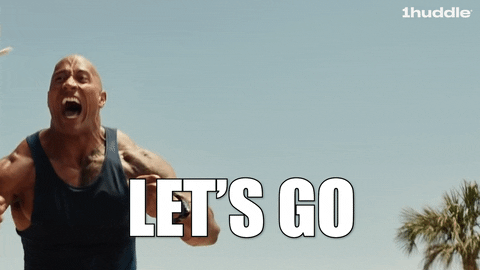

Фритрек и нулевой спринт: Подготовка к работе

<Открытие нового>Это было самое начало пути. На этом этапе важно было проникнуться основами и настроиться на учёбу. И, возможно, подумать, как новые знания могут повлиять на ваше будущее.
У меня получилось! Я смог сделать что-то сам, я начинаю свой путь в большой индустрии IT. Все только начинается